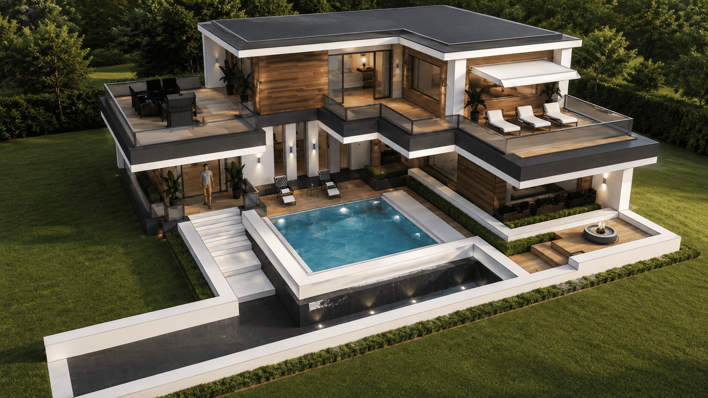
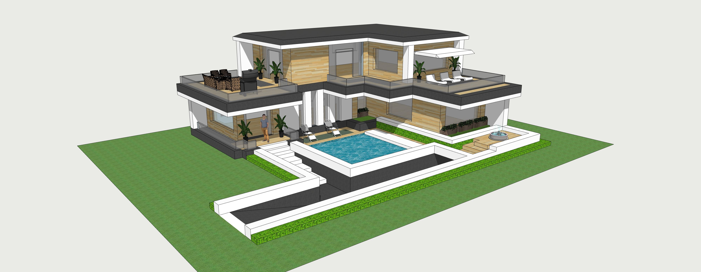
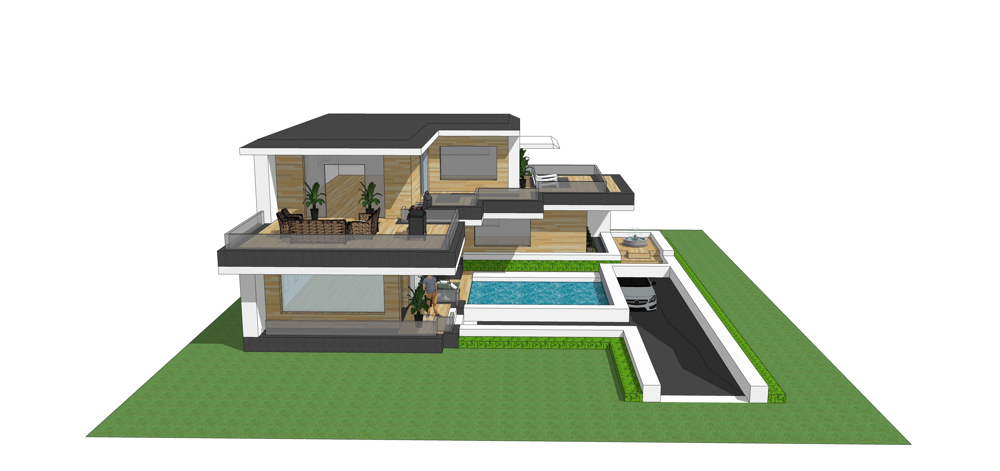
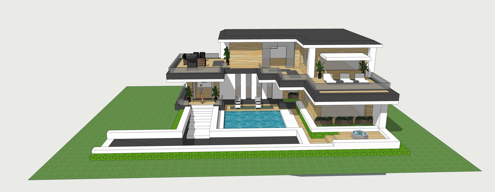
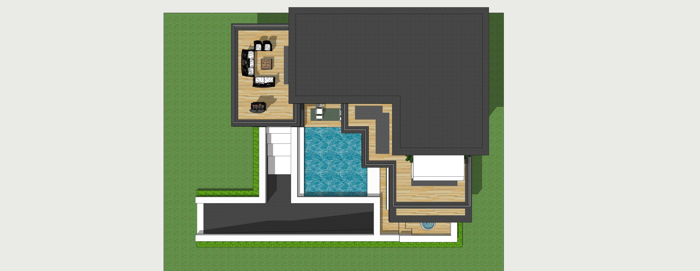
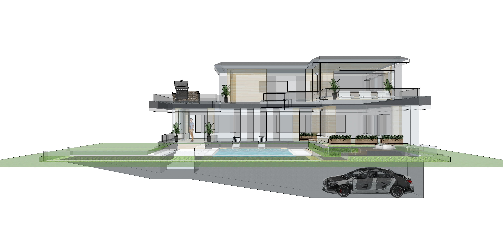

Desain Rumah • 2025
Modern Luxury House Visualization
Visualisasi rumah modern dengan konsep hunian mewah, menampilkan komposisi massa bangunan, area kolam, balkon, ruang terbuka, serta pencahayaan eksterior untuk memperkuat kesan elegan dan realistis.




